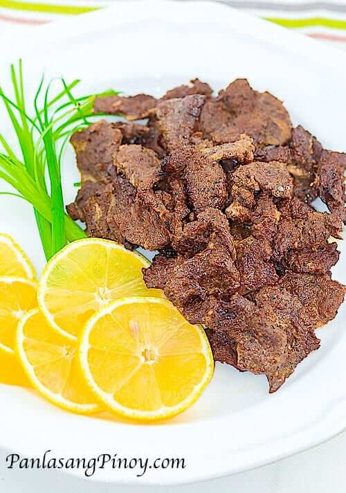

Beef Tapa

Description
Beef Tapa is dried cured beef similar to “Beef Jerky”. This is traditionally prepared by curing the meat with sea salt and letting it dry directly under the sun for the purpose of preserving the meat. Nowadays, commercialized Beef Tapa are often cured but most do not undergo drying.Tapa is usually fried and is best served with vinegar.
Ingredients
- 1 1/2 lbs beef sirloin (thinly sliced)
- 5 tbsp soy sauce
- 3 tbsp garlic (minced)
- 3 tbsp cooking oil
- 2 tbsp sugar
- 1/4 tsp salt
- 1/4 tsp ground black pepper
Steps
- In a container, combine soy sauce, garlic, salt, pepper, and sugar and mix well. Set aside.
- Place the beef in the clear plastic bag.
- Pour-in the the mixed seasonings in the clear plastic bag with meat and mix well.
- Place inside the refrigerator and marinate for a minimum of 12 hours.
- In a pan, place 1 cup water and bring to a boil.
- Add 3 tbsp of cooking oil.
- Put-in the marinated beef tapa and cook until the water evaporates.
Back to Homepage